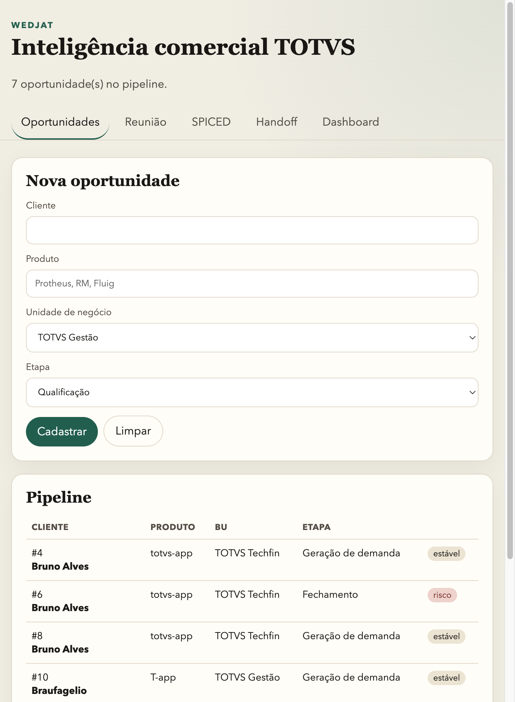

Integrantes
O Wedjat apoia pré-vendas e vendas TOTVS com oportunidades comerciais, transcrições de reunião, metodologia SPICED, score de handoff e dashboard por BU. Na Sprint 4, a solução evoluiu de menu console para API REST (Javalin) consumida por um front-end web, mantendo domínio, serviços e DAOs JDBC sobre Oracle FIAP.
Base URL local: http://localhost:7070. Execução: mvn -Prun-api exec:java.
| URI | Verbo | Descrição | Status |
|---|---|---|---|
/oportunidades | GET | Lista resumo do pipeline | 200 |
/oportunidades | POST | Cria oportunidade | 201, 400 |
/oportunidades/{id} | GET | Detalhe com SPICED e reuniões | 200, 404 |
/oportunidades/{id} | PUT | Atualiza cliente, produto e BU | 200, 400, 404 |
/oportunidades/{id} | DELETE | Remove oportunidade (cascade) | 200, 404 |
/oportunidades/{id}/etapa | PATCH | Atualiza etapa do pipeline | 200, 400, 404 |
/oportunidades/{id}/reunioes | GET | Lista reuniões | 200, 404 |
/oportunidades/{id}/reunioes | POST | Registra transcrição + insights | 201, 400, 404 |
/oportunidades/{id}/spiced | GET / PUT | Consulta / atualiza SPICED | 200, 404 |
/oportunidades/{id}/briefing | GET | Briefing SPICED | 200, 404 |
/oportunidades/{id}/handoff | POST | Calcula handoff score | 200, 404 |
/dashboard | GET | Indicadores gerais | 200 |
/dashboard/{bu} | GET | Dashboard filtrado por BU | 200, 400 |
Erros de validação e id inexistente retornam JSON { "erro": "..." }. Falhas JDBC retornam 500 com mensagem amigável (sem stack trace).
Front estático em web/ (Oportunidades, Reunião, SPICED, Handoff, Dashboard), servido pela mesma API na porta 7070.

Demais telas: abas Reunião (transcrição + insights), SPICED (campos + briefing), Handoff (score) e Dashboard (cards e barras). Capturar prints adicionais com a API em execução, se o professor solicitar mais imagens.
Oracle FIAP — 5 tabelas: TB_OPPORTUNITY, TB_SPICED_ASSESSMENT, TB_MEETING_RECORD, TB_INSIGHT, TB_HANDOFF_SCORE. DDL em sql/ddl.sql (Sprint 3). Relacionamentos 1:1 (SPICED, handoff), 1:N (reuniões, insights) com ON DELETE CASCADE.
com.totvs.wedjat.apiweb/.listarResumo() para listagens rápidas.findAllComSpiced() (JOIN), update(), CRUD completo.Domínio, demais services e DAOs permanecem conforme Sprint 3 (SPICED, transcrição, handoff, dashboard).